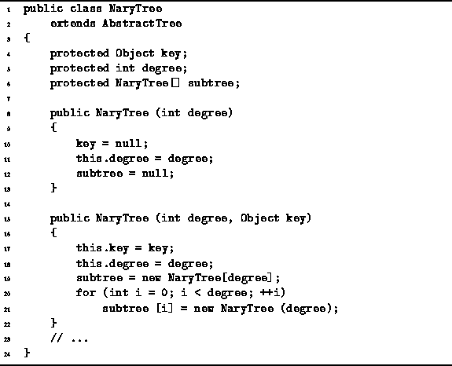

Data Structures and Algorithms
with Object-Oriented Design Patterns in Java
Data Structures and Algorithms
with Object-Oriented Design Patterns in Java
The NaryTree class declares two constructors.
Implementations for the two constructors are given in Program  .
The first constructor takes a single argument of type int
which specifies the degree of the tree.
This constructor creates an empty tree.
It does so by setting the key field to null,
and by setting the subtree array to null.
The running time of this constructor is O(1).
.
The first constructor takes a single argument of type int
which specifies the degree of the tree.
This constructor creates an empty tree.
It does so by setting the key field to null,
and by setting the subtree array to null.
The running time of this constructor is O(1).

Program: NaryTree constructors.
The second constructor takes two arguments.
The first specifies the degree of the tree,
and the second is any Object instance.
This constructor creates a non-empty tree
in which the specified object occupies the root node.
According to Definition ,
every internal node in an N-ary tree must have exactly N subtrees.
Therefore, this constructor creates and attaches N empty subtrees
to the root node.
The running time of this constructor is O(N),
since N empty subtrees are created and constructed
and the constructor for an empty N-ary tree takes O(1) time.
 Copyright © 1998 by Bruno R. Preiss, P.Eng. All rights reserved.
Copyright © 1998 by Bruno R. Preiss, P.Eng. All rights reserved.